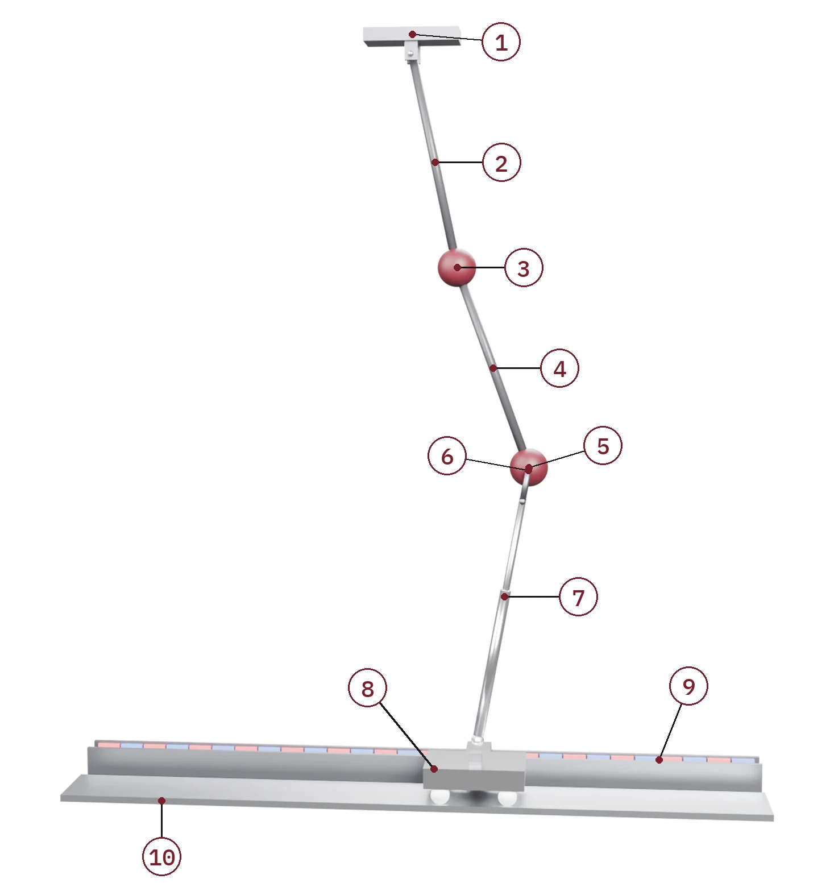
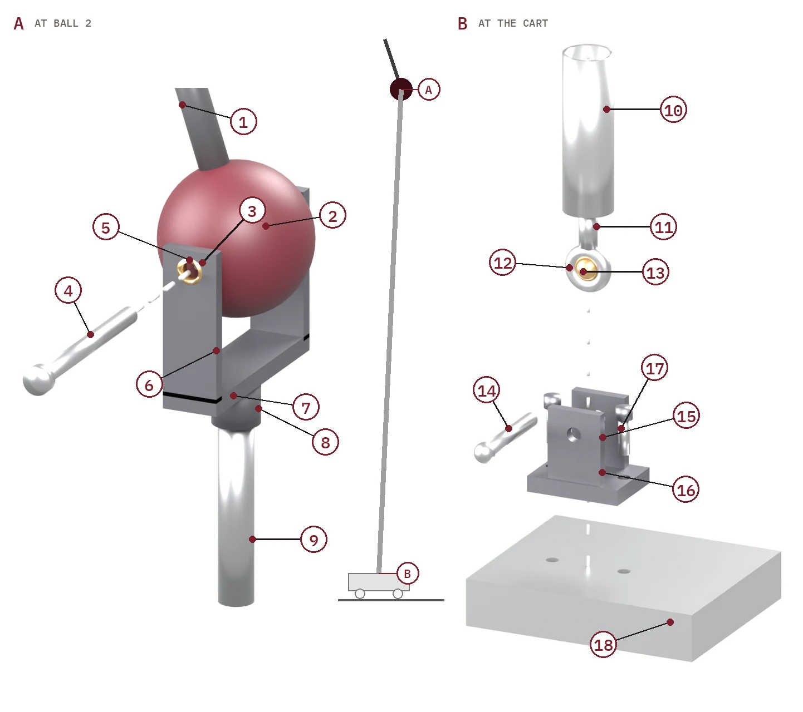
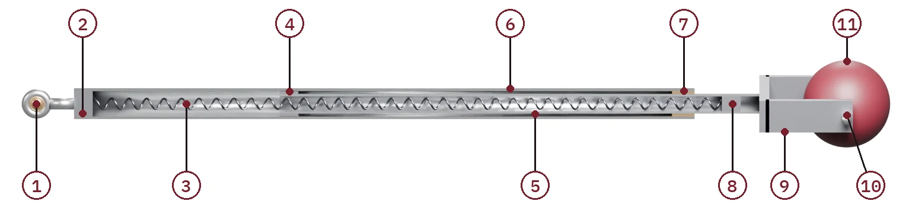
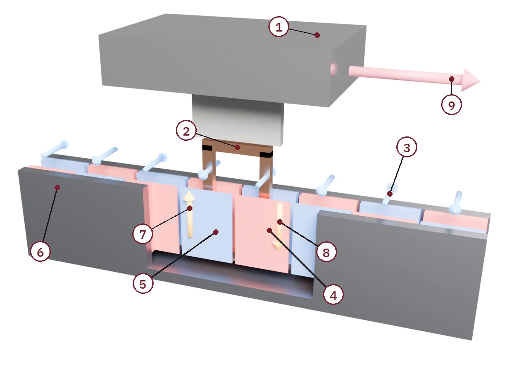

Skript · Abb. 11 · Regelungstechnik
Ein Doppelpendel an der Leine: eine Kette stillhalten, indem man nur einen Wagen schiebt
Numa Koudsie
01Die Maschine, Teil für Teil
Halten Sie eine schwere Lampe, die an zwei Gliedern von der Decke hängt, nicht an der Lampe selbst, sondern an einer gespannten Schnur, die an ihrem unteren Ende befestigt ist: Dann können Sie sie nur lenken, indem Sie das andere Ende der Schnur bewegen. Diese Maschine ist genau diese Lage, so gebaut, dass jedes Teil benannt und gesehen werden kann.
Ein Kranführer kennt das Problem aus seiner Kabine. Der Haken hängt an der Laufkatze, die Last hängt am Haken, und das Einzige, was der Kranführer steuert, ist der Motor, der die Laufkatze bewegt; jede Schwingung der Last muss über diesen einen Motor herausgenommen werden. Hier spielt ein Doppelpendel die Last, ein Wagen auf einer Schiene die Laufkatze, und eine gespannte Federstrebe ist das Einzige, was beide verbindet.
Das Ziel dieser Seite
Der Wagen, und nur der Wagen, bringt das Pendel an der Stelle zur Ruhe, die Sie wählen. Der Regler misst, wo beide Kugeln und der Wagen sind und wie schnell sie sich bewegen, stellt den Strom in der Spule ein und schiebt so den Wagen; über die Strebe zieht der Wagen an der Kette, bis alle drei Körper ruhen. Dieser Abschnitt zeigt die Maschine in Bildern; §2–§11 leiten her, was der Wagen mit der Kette tun kann; §12 entwirft den Schub; §14 zeigt, wie die Kette im Phasenraum nach Hause kommt.

Oben befindet sich ein Drehpunkt O, an einem Rahmen verschraubt, der sich nie bewegt. An ihm hängt an einem reibungsfreien Gelenk eine Stange der Länge \(l_1\), die in einer Kugel der Masse \(m_1\) endet. An dieser Kugel hängt an einem zweiten Gelenk eine zweite Stange der Länge \(l_2\), die in Kugel 2 der Masse \(m_2\) endet. Die Stangen sind Kohlefaserrohre, steif und neben den Kugeln so leicht, dass wir ihre Masse vernachlässigen; die Kugeln sind klein genug, um sie als Punkte zu behandeln. Darunter verläuft eine gerade, waagerechte Schiene mit einem Wagen der Masse \(M\) auf Nylonrädern. Neben der Schiene liegt eine Magnetbahn, und eine unter dem Wagen befestigte Spule hängt in deren Spalt. Der Wagen trägt einen Bolzen, der sich in einer festen Tiefe \(H\) unter dem Drehpunkt entlang der Schiene bewegt. Nirgends reibt etwas: Die Gelenke, die Räder und die gleitenden Rohre gelten als reibungsfrei, sodass die Maschine bei ausgeschaltetem Regler ewig schwingt.
Kette und Wagen berühren sich nur an einer Stelle: an der Strebe. Die nächsten drei Abbildungen nehmen ihre beiden Enden, ihr Inneres und den Motor, der den Wagen schiebt, auseinander.
1.1Wie Kugel 2 mit dem Wagen verbunden ist

An Kugel 2 (Teilbild A). Eine Stahlachse geht senkrecht zur Schwingungsebene gerade durch eine Bohrung im Mittelpunkt von Kugel 2. Das obere Ende der Strebe ist eine Gabel: zwei Stahlbacken, eine auf jeder Seite der Kugel, mit Bronzebuchsen, die auf den beiden Enden der Achse laufen, unterhalb der Kugel durch eine Brücke verbunden, deren Nabe auf das Innenrohr der Strebe geschraubt ist. Stange 2 ist oben in der Kugel befestigt und läuft zwischen den Backen hindurch, sodass die Gabel fast eine ganze Umdrehung um die Kugel schwingen kann; nur wenn die Strebe gerade entlang Stange 2 nach oben zeigte, träfe ihre Brücke die Stange.
Die Achse geht mit Absicht durch den Mittelpunkt der Kugel. Das Modell in §2 setzt das obere Ende der Strebe in den Mittelpunkt der Kugel, den Punkt \((x_2, y_2)\). Hätten wir stattdessen eine Halterung unter die Kugel geschraubt, zöge die Strebe an einem Punkt einige Zentimeter unter dem Mittelpunkt, der fest mit Stange 2 verbunden ist: Ihre Länge müsste bis zu diesem Punkt gemessen werden, und ihr Zug würde Stange 2 um die Kugel verdrehen. Mit der Achse durch den Mittelpunkt beschreiben Zeichnung und Gleichungen dieselbe Maschine.
Am Wagen (Teilbild B). Eine U-förmige Stahlhalterung, ein Gabelkopf, ist mit zwei Zylinderschrauben an die obere Platte des Wagens geschraubt. Ein Bolzen aus gehärtetem Stahl geht durch ihre beiden Backen. Das untere Ende der Strebe ist ein Gelenkkopf: eine Stahlöse an einem Gewindeschaft, mit einer Bronzekugel darin, und der Bolzen geht durch diese Kugel. Der Mittelpunkt des Bolzens ist der Punkt \((X, -H)\) aus §2: Er ist das Gelenk des Wagens, und die Tiefe \(H\) wird bis zu ihm gemessen.
Beide Gelenke lassen die Strebe sich in der Schwingungsebene frei drehen; die Kugel im Gelenkkopf lässt sie außerdem ein wenig aus dieser Ebene kippen, damit eine leicht verbogene Maschine nicht klemmt. Keines der beiden Gelenke kann ein Drehmoment halten. Das legt die Richtung der Kraft der Strebe fest. Halten Sie einen leichten Stock zwischen zwei Stiften: Drückten die Stifte entlang zweier verschiedener Linien auf ihn, bildeten die beiden Kräfte ein Kräftepaar und drehten den Stock, und ein Stock ohne Masse und ohne Trägheitsmoment müsste sich unendlich schnell drehen. Also sind die beiden Endkräfte einer masselosen Strebe gleich groß, entgegengesetzt und liegen auf der Linie durch die beiden Gelenkmittelpunkte. Ingenieure nennen ein solches Bauteil einen Zweikraftstab. Nennen wir \(N\) den Zug, den sie trägt, positiv, wenn sie zieht, und \(\ell\) ihre Länge, den Abstand vom Bolzen des Wagens zum Mittelpunkt der Kugel.
Zweikraftstab: Mechanics Map (Penn State), §5.2, dort für einen ruhenden Körper begründet; bei verschwindender Masse und verschwindendem Trägheitsmoment sind \(\sum F = ma\) und \(\sum\tau = I\alpha\) in jedem Augenblick null, also gilt es auch in Bewegung.
1.2Die Strebe, aufgeschnitten

Die Strebe besteht aus zwei Rohren, von denen eines im anderen gleitet. Das Außenrohr auf der Seite des Wagens ist aus Aluminium; das Innenrohr auf der Seite der Kugel ist aus Edelstahl und gleitet in einer Bronzebuchse, die in die Mündung des Außenrohrs eingepresst ist. In beiden verläuft eine lange Feder aus Stahldraht: Ein Ende ist an dem Stopfen eingehängt, der den Boden des Außenrohrs verschließt, das andere an einem Stopfen tief im Innenrohr. Zieht man die Strebe länger, gleitet das Innenrohr heraus und nimmt die obere Verankerung der Feder mit: Die Feder wird gedehnt und zieht zurück. Schiebt man die Strebe kürzer, wird die Feder zusammengedrückt und drückt zurück. Ihre Windungen sind offen gewickelt, mit Lücken dazwischen, sodass sie beides kann. In beiden Fällen ist die Kraft
\[ N = k_s(\ell - L_0) , \]wobei \(k_s\) ihre Steifigkeit ist und \(L_0\) die Länge der Strebe, bei der die Feder entspannt ist. Die Feder wird schon gedehnt eingebaut, sodass sie auch dann zieht, wenn die Kette in Ruhe hängt, wie eine Gitarrensaite, die vor dem Spielen gespannt wird. Ein so eingestellter Zug ist eine Vorspannung; die Seite stellt sie über den Zug \(N_0\) ein, den die Strebe trägt, wenn die Kette gerade nach unten über dem Wagen hängt.
Die Rohre können nicht unbegrenzt gleiten. Herausgezogen stößt der Bund am Innenrohr (4) an die Bronzebuchse (7): Die Strebe ist dann am längsten, \(\ell_\text{max} = 0.95\ \mathrm m\). Hineingeschoben stößt das Ende des Innenrohrs an den unteren Stopfen (2): Die Strebe ist am kürzesten, \(\ell_\text{min} = 0.50\ \mathrm m\). Die Seite stellt jeden Anschlag als sehr steife Feder \(k_\text{stop} = 2\times10^4\ \mathrm{N/m}\) dar, mit einem Dämpfer \(c_\text{stop} = 40\ \mathrm{kg/s}\), der nur wirkt, solange der Anschlag berührt wird. Der Dämpfer verwandelt den Stoß in Wärme, \(Q_\text{stop} = \int c_\text{stop}\dot\ell^2\, dt\), den einzigen Verlust der Maschine außer der Spule.
1.3Die Magnetbahn und die Spule

Der Wagen wird von einem Linearmotor geschoben, der wie ein entlang einer Schiene ausgelegter Lautsprecher arbeitet. Die Bahn ist ein U-förmiger Stahlkanal. An der Innenseite beider Wände sitzen Neodym-Magnete, die sich alle paar Zentimeter abwechseln, und jeder Nordfläche an einer Wand liegt eine Südfläche an der anderen gegenüber. Quer über den schmalen Spalt zeigt das Feld also gerade von einer Wand zur anderen: über einem Paar auf Sie zu, über dem nächsten von Ihnen weg (3). Der Stahlkanal führt das Feld hinter den Magneten herum, sodass fast das ganze Feld den Spalt durchquert.
In den Spalt hängt die Spule (2). Ihre beiden senkrechten Schenkel liegen ein Magnetpaar auseinander, sodass sie immer in Feldern sitzen, die in entgegengesetzte Richtungen zeigen. Verlangt der Regler einen Strom \(I\), treibt ihn die Stromquelle in einem Schenkel nach oben und im anderen nach unten (7, 8). Ein Draht der Länge \(\boldsymbol\ell_w\), der Strom quer durch ein Magnetfeld führt, spürt die Lorentzkraft \(I\,\boldsymbol\ell_w\times\mathbf B\). Im linken Schenkel fließt der Strom nach oben und das Feld zeigt auf Sie zu; im rechten fließt der Strom nach unten und das Feld zeigt von Ihnen weg. Beide Umkehrungen zusammen lassen beide Kräfte in dieselbe Richtung zeigen, nach rechts entlang der Schiene (9). Kehrt man den Strom um, wird der Wagen nach links geschoben. Der Schub wächst im Gleichschritt mit dem Strom,
\[ F = \kappa I , \]mit der Kraftkonstante \(\kappa = B\ell_w\): das Feld \(B\) im Spalt mal die gesamte Länge \(\ell_w\) des Drahtes, der darin sitzt, beide Schenkel zusammen. Der Strom kommt aus einer Stromquelle, einem elektronischen Treiber, der genau den Strom liefert, den man ihm vorgibt, was die Spule auch tut, bis zu \(I_\text{max}\).
Bei ausgeschalteter Spule ist \(I = 0\), und die Spule schiebt nichts; sie fährt im Spalt als Fahrgast mit. Das Einzige, was den Wagen entlang der Schiene bewegt, ist die Strebe. Ihr Zug \(N\) wirkt entlang ihrer eigenen Linie; die Schiene nimmt den senkrechten Anteil auf, und der waagerechte Anteil ist \(N\) mal die Neigung der Strebe. Sitzt Kugel 2 im waagerechten Abstand \(x_2 - X\) rechts vom Bolzen des Wagens, neigt sich die Strebe um so viel über ihre Länge \(\ell\), also
\[ M\ddot X = N\,\frac{x_2 - X}{\ell} . \tag{1} \]Der Wagen wird zum Punkt unter Kugel 2 gezogen, wie ein Schlitten, der an jemanden gebunden ist, der über ihm auf einem Balkon entlanggeht. Schwingt Kugel 2 nach rechts, neigt sich die Strebe nach rechts und zieht den Wagen nach rechts; schwingt die Kugel zurück, tut es auch der Wagen. Der Wagen bewegt sich, obwohl niemand ihn schiebt.
Bei eingeschalteter Spule stellt der Regler den Strom ein, und die Spule fügt ihren Schub hinzu:
\[ M\ddot X = N\,\frac{x_2 - X}{\ell} + F . \tag{2} \]Der Wagen kann nun dem Schwung voraus gefahren oder gegen ihn zurückgehalten werden, und über die Strebe ist das der einzige Weg zur Kette.
Eine Vereinfachung, offen gesagt. Eine einzelne Spule über abwechselnden Magneten schiebt am stärksten, wenn ihre Schenkel über der Mitte der Magnete sitzen, und gar nicht, wenn sie über den Stoßstellen zwischen ihnen sitzen. Wirkliche Langhubmotoren verwenden drei Spulen nebeneinander, und der Treiber verteilt den Strom so auf sie, dass der Schub überall gleich ist. Die Seite modelliert diesen idealen Motor, mit einer einzigen Konstante \(\kappa\).
Kraft und Gegenspannung mit einer einzigen Konstante: MIT 2.003 (2005), Prelab 4, Gl. (1)–(2). Ein Wagen, der sich ohne angelegte Kraft bewegt: Green (2020), Wagen und Stange.
1.4Wie der Wagen die Kette nach Hause bringt
Stellen Sie sich ein Kind auf einer Schaukel vor, und nehmen Sie an, den Sitz dürften Sie nur über eine lange, weiche Gummischnur berühren, die an ihm festgebunden ist. Halten Sie das Ende der Schnur still, und die Schaukel schwingt ewig weiter: Die Schnur dehnt sich und entspannt sich, nimmt ein wenig Energie auf und gibt sie zurück, und eine Hand, die sich nicht bewegt, leistet keine Arbeit. Um die Schaukel anzuhalten, müssen Sie die Hand bewegen. Folgen Sie dem Sitz, geben Sie der Schnur etwas langsamer nach, als sie zieht, und die Schnur zieht am Ende gegen die Bewegung des Sitzes; Ihr Arm nimmt die Arbeit auf, wie es ein Dämpfer täte. Bei jedem Schwung geht ein wenig verloren, und der Sitz kommt zur Ruhe.
Die Maschine arbeitet genauso, Teil für Teil. Die Schnur ist die Strebe. In erster Ordnung ist ihr seitlicher Zug der einer gespannten Saite (§9); bei den Startwerten ergibt der Zug \(N_0\) entlang der Strebe, gekippt um den Versatz zwischen Kugel 2 und Wagen, eine seitliche Kraft \((N_0/\ell_0)\,(X - x_2)\) auf Kugel 2, etwa 4.6 N für jeden Meter, den der Wagen neben der Kugel steht, und die Gegenkraft auf den Wagen. Die Hand ist der Wagen. Der Arm ist die Spule: Sie schiebt den Wagen mit \(F\), und ihre Leistung \(F\dot X\) ist positiv, wenn sie den Wagen beschleunigt, und negativ, wenn sie ihn bremst; beim Bremsen fließt die Energie zurück in die Stromquelle. Nichts anderes berührt die Kette. Die Energie einer Schwingung hat also genau einen Ausweg: von der Kette über die Saite in den Wagen und vom Wagen über die Spule in die Quelle.
Abbildung 6 verfolgt ein Loslassen, berechnet mit dem linearen Modell aus §9–§12 an der gerade hängenden Ruhelage (Ziel \(r = 0\)) und mit der Grenze der Spule von 30 N. Kugel 2 wird 10 cm nach rechts bewegt, alles andere festgehalten, und losgelassen. Die Schwingung enthält dann 0.102 J: 0.079 J in der Kette (davon 0.049 J Schwerkraft, weil Kugel 2 um 1.0 cm angehoben wurde, und 0.030 J in der Feder, die um so viel gedehnt ist, wie die Kugel stieg) und 0.023 J in der seitlichen Dehnung der Saite. In der ersten Zehntelsekunde schiebt die Spule den Wagen der Kugel hinterher, in den ersten 3.5 ms mit vollen 30 N, und pumpt 0.50 J in den Wagen, fünfmal so viel, wie die Schwingung enthält. Nach 0.2 s ist der Wagen 12 cm gefahren, an der Kugel vorbei, die nun zurückschwingt; die Saite zieht Kugel 2 nach rechts, gegen ihre Bewegung, während die Spule den Wagen bremst und die 0.50 J zurücknimmt, und ein wenig mehr. So geht es weiter, Schwung für Schwung, jeder kleiner als der vorige. Nach 8 s hat die Spule 2.30 J in den Wagen gesteckt und 2.40 J herausgenommen; die Differenz, 0.102 J, ist die Energie, die die Schwingung enthielt. In denselben 8 s hat die Saite −0.079 J Arbeit an der Kette verrichtet, die ganze Schwingung der Kette, und +0.102 J am Wagen.
Daraus folgen zwei Dinge, und beide sind auf der Seite zu sehen. Der Wagen muss sich bewegen, und er bewegt sich zuerst, zur Kugel hin: Eine Saite, deren Ende stillsteht, kann nur zurückgeben, was sie aufnimmt. Und die Spule ist keine Bremse, die einfach angezogen ist; sie ist eine Pumpe, die in beide Richtungen läuft, bei jedem Schwung ein wenig mehr hinaus als hinein. Die Balken oben links im Bild führen diese Rechnung: \(E - E^*\) ist die Energie über der Ruhelage, \(W_\text{coil}\) die Arbeit der Spule seit Beginn des Laufs. Setzen Sie das Ziel auf 0, ziehen Sie Kugel 2 zur Seite und lassen Sie los: \(W_\text{coil}\) fällt um genau das, was \(E - E^*\) verliert. Schalten Sie den Regler aus und tun Sie dasselbe: \(W_\text{coil}\) bleibt null, und die Energie bleibt für immer in der Kette. Wie stark die Spule pumpen darf, ist der Entwurf des Reglers (§12). Sanft berechnet den Aufwand der Spule fünfmal höher als Straff (\(\rho = 0.1\) gegenüber \(0.02\)), schiebt also weniger, und die Kette braucht länger nach Hause.
1.5Die Parameter
Jede Größe, die die Maschine festlegt, ist ein Schieberegler auf der Seite. Die Herleitungen unten behalten sie alle als Symbole; die Zahlen im Text gelten für die Startwerte dieser Tabelle.
| Symbol | Bedeutung | Startwert | Bereich |
|---|---|---|---|
| \(m_1,\ m_2\) | Massen der beiden Kugeln | 0.5 kg | 0.1–2 kg |
| \(l_1,\ l_2\) | Längen der beiden Stangen | 0.5 m | 0.3–0.7 m |
| \(M\) | Masse des Wagens mit seiner Spule | 1 kg | 0.2–5 kg |
| \(H\) | Tiefe des Wagenbolzens unter dem Drehpunkt | 1.65 m | hält \(\ell_0\) zwischen 0.55 und 0.85 m |
| \(\kappa\) | Kraftkonstante der Spule | 10 N/A | 2–30 N/A |
| \(I_\text{max}\) | größter Strom, den die Quelle liefert | 3 A | 0.5–8 A |
| \(k_s\) | Steifigkeit der Feder | 100 N/m | 20–400 N/m |
| \(N_0\) | Zug der Strebe, wenn die Kette gerade nach unten hängt | 3 N | −6 bis 10 N |
| \(g\) | Erdbeschleunigung | 9.81 m/s² | fest |
| \(\ell_\text{min},\ \ell_\text{max}\) | Anschläge der Strebe | 0.50, 0.95 m | durch die Rohre festgelegt |
02Koordinaten
Drei Körper bewegen sich in einer senkrechten Ebene: zwei Kugeln und der Wagen. Ein freier Punkt in einer Ebene braucht zwei Zahlen, drei freie Körper also sechs. Jede starre Stange legt einen Abstand fest, und die Schiene legt die Höhe des Wagens fest: drei Bedingungen allein an die Positionen. Sechs minus drei lässt drei Freiheitsgrade. Die Strebe fügt keinen hinzu, weil ihre Länge daraus folgt, wo Kugel 2 und der Wagen sind.
Wir wählen den Winkel jeder Stange gegen die Senkrechte nach unten, positiv nach rechts, und die Position des Wagens entlang der Schiene, gemessen vom Punkt unter dem Drehpunkt:
\[ \mathbf q = (\theta_1,\ \theta_2,\ X) . \]Legen Sie den Drehpunkt in den Ursprung, \(x\) nach rechts und \(y\) nach oben. Aus Abbildung 5 liest man die Positionen ab,
\[ \begin{aligned} x_1 &= l_1\sin\theta_1, \\ y_1 &= -l_1\cos\theta_1, \\ x_2 &= l_1\sin\theta_1 + l_2\sin\theta_2, \\ y_2 &= -l_1\cos\theta_1 - l_2\cos\theta_2 , \end{aligned} \tag{3} \]und der Bolzen des Wagens liegt bei \((X, -H)\). Zwei Längen beschreiben die Strebe: ihr waagerechter Versatz und ihre senkrechte Spanne,
\[ a = x_2 - X, \qquad b = y_2 + H . \]Nach Pythagoras ist die Strebe, vom Bolzen des Wagens bis zum Mittelpunkt der Kugel,
\[ \ell = \sqrt{a^2 + b^2} . \tag{4} \]Hängt die Kette gerade nach unten über dem Wagen, ist \(a = 0\) und \(b = H - l_1 - l_2\), die Strebe also \(\ell_0 = H - l_1 - l_2\) lang. Die Seite hält \(\ell_0\) zwischen den Anschlägen: Wer \(l_1\), \(l_2\) oder \(H\) verschiebt, verschiebt die Grenzen der anderen mit.
Positionen: Widnall, MIT 16.07, Vorlesung L20, Gl. (26)–(29), um den Wagen ergänzt.
03Geschwindigkeiten und kinetische Energie
Leiten Sie die Positionen (3) nach der Zeit ab. Die Winkel ändern sich mit der Zeit, also nach der Kettenregel \(\tfrac{d}{dt}\sin\theta = \dot\theta\cos\theta\) und \(\tfrac{d}{dt}\cos\theta = -\dot\theta\sin\theta\). Für Kugel 1:
\[ \dot x_1 = l_1\dot\theta_1\cos\theta_1, \qquad \dot y_1 = l_1\dot\theta_1\sin\theta_1 . \]Quadrieren und addieren, und \(\cos^2 + \sin^2 = 1\) verwenden:
\[ \dot x_1^2 + \dot y_1^2 = l_1^2\dot\theta_1^2 . \]Kugel 1 läuft auf einem Kreis, ihre Geschwindigkeit ist also der Radius mal die Drehrate. Für Kugel 2 ist jede Komponente eine Summe aus zwei Termen:
\[ \begin{aligned} \dot x_2 &= l_1\dot\theta_1\cos\theta_1 + l_2\dot\theta_2\cos\theta_2, \\ \dot y_2 &= l_1\dot\theta_1\sin\theta_1 + l_2\dot\theta_2\sin\theta_2 . \end{aligned} \]Das Quadrat einer Summe ergibt zwei Quadrate und einen Kreuzterm. Addiert man die beiden quadrierten Komponenten, fassen sich die Quadrate wie bei Kugel 1 zusammen, und die Kreuzterme fassen sich zusammen zu
\[ 2l_1l_2\dot\theta_1\dot\theta_2\,(\cos\theta_1\cos\theta_2 + \sin\theta_1\sin\theta_2) . \]Die Klammer ist nach dem Additionstheorem \(\cos(\theta_1 - \theta_2)\). Also
\[ \begin{aligned} \dot x_2^2 + \dot y_2^2 ={}& l_1^2\dot\theta_1^2 + l_2^2\dot\theta_2^2 \\ &+ 2l_1l_2\dot\theta_1\dot\theta_2\cos(\theta_1 - \theta_2) . \end{aligned} \]Stellen Sie sich die Geschwindigkeit von Kugel 2 als zwei aneinandergelegte Pfeile vor: die Geschwindigkeit von Kugel 1, senkrecht zu Stange 1, und die eigene Drehung von Kugel 2 um Kugel 1, senkrecht zu Stange 2. Sind die Stangen parallel, zeigen die Pfeile in dieselbe Richtung und addieren sich voll, und der Kosinus ist 1. Stehen die Stangen im rechten Winkel, tun es auch die Pfeile, der Kreuzterm verschwindet, und nur Pythagoras bleibt. Der Wagen bewegt sich mit der Geschwindigkeit \(\dot X\) entlang der Schiene. Addiert man \(\tfrac12 mv^2\) für die drei Körper,
\[ \begin{aligned} T ={}& \tfrac12(m_1 + m_2)\,l_1^2\dot\theta_1^2 + \tfrac12 m_2l_2^2\dot\theta_2^2 \\ &+ m_2l_1l_2\cos(\theta_1 - \theta_2)\,\dot\theta_1\dot\theta_2 \\ &+ \tfrac12 M\dot X^2 . \end{aligned} \tag{5} \]Widnall, L20, Gl. (30): dasselbe Ergebnis ohne den Wagen.
04Potentielle Energie
Die Energie der Schwerkraft ist \(mgy\) für jede Kugel, mit den Höhen \(y_1, y_2\) aus (3). Die Höhe des Wagens ändert sich nie, seine Schwerkraftenergie ist also eine Konstante, die wir weglassen. Die Feder speichert \(\tfrac12 k_s(\ell - L_0)^2\). Also
\[ \begin{aligned} V ={}& -(m_1 + m_2)\,gl_1\cos\theta_1 \\ &- m_2gl_2\cos\theta_2 \\ &+ \tfrac12 k_s(\ell - L_0)^2 , \end{aligned} \tag{6} \]mit \(\ell\) aus (4). Die Vorspannung legt die entspannte Länge fest: In der hängenden Ruhelage ist der Zug \(N_0 = k_s(\ell_0 - L_0)\), also \(L_0 = \ell_0 - N_0/k_s\). Bei den Startwerten ist die Feder in Ruhe dann um 3 cm gedehnt.
Schwerkraft: Widnall, L20, Gl. (31). Feder zwischen zwei bewegten Punkten: Witkin, „Particle System Dynamics“, SIGGRAPH 2001 notes, §6, Energie \(\tfrac{k_s}{2}C^2\) mit \(C = \ell - L_0\).
05Die Spule in der Lagrange-Funktion
Lassen Sie den Motor aus §1.3 rückwärts laufen. Bewegt sich der Wagen mit \(\dot X\), streichen die Schenkel der Spule durch das Feld, und in der Spule entsteht eine Spannung \(\kappa\dot X\), die Gegenspannung, mit derselben Konstante wie die Kraft. Es muss dieselbe Konstante sein, damit die Energie aufgeht: Die Leistung, die die Quelle aufwendet, um \(I\) gegen \(\kappa\dot X\) zu treiben, ist \(\kappa I\dot X\), genau die Leistung \(F\dot X\), die die Spule an den Wagen abgibt.
Um die Spule in das Verfahren von Lagrange aufzunehmen, brauchen wir eine weitere Koordinate, die Ladung \(\eta\), die durch die Spule geflossen ist, sodass \(\dot\eta = I\). Die Kopplungsenergie wird aus dem Kraftgesetz gebaut: Ihre Ableitung nach der Position des Wagens muss an jeder Stelle die Kraft \(\kappa\dot\eta\) sein, und die Integration entlang der Schiene ergibt \(\kappa X\dot\eta\). Mit der eigenen magnetischen Energie der Spule \(\tfrac12\Lambda\dot\eta^2\), wobei \(\Lambda\) ihre Induktivität ist, lautet die Lagrange-Funktion der ganzen Maschine
\[ \mathcal L = T - V + \tfrac12\Lambda\dot\eta^2 + \kappa X\dot\eta . \tag{7} \]Prüfen wir, dass sie beide Wirkungen zurückgibt. Der Kopplungsterm enthält \(X\), also enthält \(\partial\mathcal L/\partial X\) den Term \(\kappa\dot\eta = \kappa I\): die Kraft auf den Wagen. Er enthält auch \(\dot\eta\), also
\[ \frac{d}{dt}\frac{\partial\mathcal L}{\partial\dot\eta} = \Lambda\ddot\eta + \kappa\dot X . \tag{8} \]Mit einem Widerstand \(R\) in der Spule und einer Spannung \(U\) an ihr lautet die Lagrange-Gleichung für \(\eta\) \(\Lambda\dot I + RI + \kappa\dot X = U\), und \(\kappa\dot X\) ist die Gegenspannung. Die Stromquelle legt \(I\) fest und liefert jede Spannung, die das braucht. Dann ist \(\eta\) nicht mehr frei: Diese Gleichung sagt nur, welche Spannung die Quelle liefern muss, und auf der mechanischen Seite wirkt \(F = \kappa I\) als vorgegebener Schub auf den Wagen.
Manhães, Sampaio, Lima, Hagedorn und Deü, Mecánica Computacional XXXVI (2018): Kopplungsterm aus dem Kraftgesetz, Gl. (69)–(73); Lagrange-Funktion, Gl. (84); elektrische Gleichung, Gl. (96), für einen Drehmotor, bei dem das \(X\) des Wagens ein Winkel ist.
06Wie die Feder auf jede Koordinate wirkt
Die Lagrange-Gleichungen brauchen \(\partial V/\partial q\) für jede Koordinate. Der Anteil der Schwerkraft ist direkt; die Feder braucht die Kettenregel:
\[ \frac{\partial}{\partial q}\,\tfrac12 k_s(\ell - L_0)^2 = N\,\frac{\partial\ell}{\partial q} . \tag{9} \]Der Zug mal die Rate, mit der sich die Strebe dehnt, wenn sich diese Koordinate ändert. Um die Rate zu finden, leiten wir \(\ell^2 = a^2 + b^2\) aus (4) ab:
\[ 2\ell\,\frac{\partial\ell}{\partial q} = 2a\,\frac{\partial a}{\partial q} + 2b\,\frac{\partial b}{\partial q}, \] \[ \frac{\partial\ell}{\partial q} = \frac{a}{\ell}\frac{\partial a}{\partial q} + \frac{b}{\ell}\frac{\partial b}{\partial q} . \tag{10} \]Hier ist \((a/\ell,\ b/\ell)\) der Einheitsvektor entlang der Strebe, und \((\partial a/\partial q,\ \partial b/\partial q)\) sagt, wie sich ihr Ende bewegt, wenn sich \(q\) ändert. Die Strebe wird also nur um den Teil der Bewegung ihres Endes länger, der entlang der Strebe zeigt; eine Bewegung quer zu ihr dreht sie nur um ihre Bolzen. Bewegen Sie Kugel 2 einen Zentimeter zur Seite, während die Strebe senkrecht steht, und ihre Länge ändert sich kaum; bewegen Sie Kugel 2 einen Zentimeter nach oben, und sie wird einen Zentimeter länger.
Aus (3) \(\partial a/\partial\theta_1 = l_1\cos\theta_1\) und \(\partial b/\partial\theta_1 = l_1\sin\theta_1\); dasselbe mit Index 2 für \(\theta_2\); und \(\partial a/\partial X = -1\), \(\partial b/\partial X = 0\). Also
\[ \begin{aligned} \frac{\partial\ell}{\partial\theta_1} &= \frac{l_1}{\ell}\,(a\cos\theta_1 + b\sin\theta_1), \\ \frac{\partial\ell}{\partial\theta_2} &= \frac{l_2}{\ell}\,(a\cos\theta_2 + b\sin\theta_2), \\ \frac{\partial\ell}{\partial X} &= -\frac{a}{\ell} . \end{aligned} \tag{11} \]Witkin, §6: Eine Energie \(\tfrac{k_s}{2}C^2\) ergibt die Kraft \(-k_sC\,\partial C/\partial x_i\); §4.2, Gl. (1): Eine Feder zieht an ihren beiden Enden gleich stark und entgegengesetzt entlang der Linie, die sie verbindet.
07Die Lagrange-Gleichungen, jeder Term★>
Für jede Koordinate gilt \(\tfrac{d}{dt}\,\partial\mathcal L/\partial\dot q - \partial\mathcal L/\partial q = 0\). Um die Zeilen kurz zu halten, schreiben wir
\[ \mu = m_2l_1l_2, \quad c = \cos(\theta_1 - \theta_2), \quad s = \sin(\theta_1 - \theta_2) . \]Nach der Kettenregel \(\dot c = -s\,(\dot\theta_1 - \dot\theta_2)\).
7.1Die obere Stange, \(\theta_1\)
\[ \begin{aligned} p_1 &= \frac{\partial T}{\partial\dot\theta_1} \\ &= (m_1 + m_2)l_1^2\dot\theta_1 + \mu c\,\dot\theta_2 . \end{aligned} \]Ihre Zeitableitung braucht für den zweiten Term die Produktregel, \(\tfrac{d}{dt}(c\,\dot\theta_2) = \dot c\,\dot\theta_2 + c\,\ddot\theta_2\):
\[ \begin{aligned} \dot p_1 ={}& (m_1 + m_2)l_1^2\ddot\theta_1 + \mu c\,\ddot\theta_2 \\ &- \mu s\,\dot\theta_1\dot\theta_2 + \mu s\,\dot\theta_2^2 . \end{aligned} \]In \(T\) hängt nur \(c\) von \(\theta_1\) selbst ab, und \(\partial c/\partial\theta_1 = -s\), also \(\partial T/\partial\theta_1 = -\mu s\,\dot\theta_1\dot\theta_2\). Subtrahieren: Der Term \(-\mu s\,\dot\theta_1\dot\theta_2\) in \(\dot p_1\) trifft auf \(+\mu s\,\dot\theta_1\dot\theta_2\), und die beiden heben sich auf:
\[ \begin{aligned} &\dot p_1 - \frac{\partial T}{\partial\theta_1} \\ &= (m_1 + m_2)l_1^2\ddot\theta_1 + \mu c\,\ddot\theta_2 + \mu s\,\dot\theta_2^2 . \end{aligned} \]Das Potential liefert \(\partial V/\partial\theta_1 = (m_1 + m_2)gl_1\sin\theta_1 + N\,\partial\ell/\partial\theta_1\), aus (6) und (9). Also
\[ \begin{aligned} &(m_1 + m_2)l_1^2\ddot\theta_1 + \mu c\,\ddot\theta_2 + \mu s\,\dot\theta_2^2 \\ &+ (m_1 + m_2)gl_1\sin\theta_1 \\ &+ N\frac{\partial\ell}{\partial\theta_1} = 0 . \end{aligned} \tag{12} \]7.2Die untere Stange, \(\theta_2\)
\[ \begin{aligned} p_2 &= \frac{\partial T}{\partial\dot\theta_2} \\ &= m_2l_2^2\dot\theta_2 + \mu c\,\dot\theta_1 , \end{aligned} \] \[ \begin{aligned} \dot p_2 ={}& m_2l_2^2\ddot\theta_2 + \mu c\,\ddot\theta_1 \\ &- \mu s\,\dot\theta_1^2 + \mu s\,\dot\theta_1\dot\theta_2 . \end{aligned} \]Nun ist \(\partial c/\partial\theta_2 = +s\), also \(\partial T/\partial\theta_2 = +\mu s\,\dot\theta_1\dot\theta_2\). Beim Subtrahieren heben sich die gemischten Terme wieder auf:
\[ \begin{aligned} &\dot p_2 - \frac{\partial T}{\partial\theta_2} \\ &= m_2l_2^2\ddot\theta_2 + \mu c\,\ddot\theta_1 - \mu s\,\dot\theta_1^2 . \end{aligned} \]Mit \(\partial V/\partial\theta_2 = m_2gl_2\sin\theta_2 + N\,\partial\ell/\partial\theta_2\):
\[ \begin{aligned} &\mu c\,\ddot\theta_1 + m_2l_2^2\ddot\theta_2 - \mu s\,\dot\theta_1^2 \\ &+ m_2gl_2\sin\theta_2 \\ &+ N\frac{\partial\ell}{\partial\theta_2} = 0 . \end{aligned} \tag{13} \]7.3Der Wagen, \(X\)
\(T\) enthält \(\dot X\) nur in \(\tfrac12 M\dot X^2\), und der Kopplungsterm \(\kappa X\dot\eta\) enthält \(X\), aber nicht \(\dot X\). Also \(\partial\mathcal L/\partial\dot X = M\dot X\) und \(\partial\mathcal L/\partial X = -N\,\partial\ell/\partial X + \kappa I\):
\[ M\ddot X + N\frac{\partial\ell}{\partial X} = F . \tag{14} \]Setzen Sie \(\partial\ell/\partial X = -a/\ell\) aus (11) ein: \(M\ddot X = F + N(x_2 - X)/\ell\). Das ist (2), in §1.3 allein aus dem Bild von Motor und Strebe gefunden. Lagrange und Newton stimmen beim Wagen überein, wie sie müssen.
7.4Was die Terme mit Geschwindigkeitsquadraten bedeuten
Drehen Sie die obere Stange schnell. Kugel 1 läuft auf einem Kreis, und Kugel 2, die an ihr hängt, wird mit der Kraft \(m_2l_1\dot\theta_1^2\) entlang Stange 1 nach außen geschleudert. Liegt Stange 2 nicht in Verlängerung von Stange 1, hat dieses Schleudern einen Hebelarm \(l_2\sin(\theta_1 - \theta_2)\) um Kugel 1 und dreht Stange 2: Das ist \(-\mu s\,\dot\theta_1^2\) in (13). Der Term \(\mu s\,\dot\theta_2^2\) in (12) ist das Spiegelbild: Kugel 2, die um Kugel 1 wirbelt, zieht Kugel 1 entlang Stange 2 nach außen. Beide sind Zentrifugalkräfte. Die gemischten Terme \(\dot\theta_1\dot\theta_2\), die Corioliskräfte gewesen wären, haben sich genau aufgehoben.
7.5Alle drei zusammen
Fassen wir die Beschleunigungen in einer Massenmatrix zusammen:
\[ \mathbf M = \begin{pmatrix} (m_1 + m_2)l_1^2 & \mu c & 0 \\ \mu c & m_2l_2^2 & 0 \\ 0 & 0 & M \end{pmatrix} . \]Dann lauten (12)–(14)
\[ \mathbf M\ddot{\mathbf q} + \mu s\begin{pmatrix} \dot\theta_2^2 \\ -\dot\theta_1^2 \\ 0 \end{pmatrix} + \nabla V = \begin{pmatrix} 0 \\ 0 \\ F \end{pmatrix} . \tag{15} \]Die Massenmatrix hat einen Nullblock: Die Trägheit des Wagens mischt sich nicht mit der der Kette. Alles, was den Wagen an die Kette bindet, steckt in \(\nabla V\), über den Zug der Strebe \(N\); die Spule schiebt nur den Wagen. Die Seite löst (15) in accel() nach den Beschleunigungen auf.
Ohne die Strebe sind (12) und (13) Widnall, L20, Gl. (36)–(41); ihre (40)–(41) sind (12) und (13), geteilt durch \(l_1\) und \(l_2\).
08Wo die Kette ruhen kann
In Ruhe sind alle Geschwindigkeiten und Beschleunigungen null, also verschwinden die Terme mit Geschwindigkeitsquadraten, und (15) lässt \(\nabla V = (0, 0, F)\) übrig.
8.1Spule aus
Mit \(F = 0\) sagt die Gleichung des Wagens (14) mit (11) \(N\,(x_2 - X)/\ell = 0\). Ein Produkt ist null, wenn einer der Faktoren null ist, also gibt es zwei Fälle.
Die Strebe steht senkrecht, \(x_2 = X\). Dann ist \(a = 0\) und \(\ell = b\), also liefert (11) \(\partial\ell/\partial\theta_1 = l_1\sin\theta_1\) und \(\partial\ell/\partial\theta_2 = l_2\sin\theta_2\), und (12), (13) werden in Ruhe zu
\[ \begin{aligned} \big[(m_1 + m_2)g + N\big]\,l_1\sin\theta_1 &= 0, \\ (m_2g + N)\,l_2\sin\theta_2 &= 0 . \end{aligned} \]Jede Stange zeigt also gerade nach unten oder gerade nach oben. Nur gerade nach unten passt zu den Rohren; die drei anderen Anordnungen bräuchten eine Strebe der Länge \(H - l_1 + l_2\), \(H + l_1 - l_2\) oder \(H + l_1 + l_2\), länger als \(\ell_\text{max}\) bei jeder Einstellung, die die Schieberegler erlauben.
Die Strebe trägt keinen Zug, \(N = 0\): Die Feder hat ihre entspannte Länge, \(\ell = L_0\). Auf die Kette wirkt nur die Schwerkraft, also hängen beide Stangen gerade nach unten, \(b = \ell_0\), und der Wagen steht dort, wo \(\sqrt{(x_2 - X)^2 + \ell_0^2} = L_0\). Das verlangt \(L_0 \ge \ell_0\), also \(N_0 \le 0\): eine Strebe, die drückt. Mit einer ziehenden Strebe kann dieser Fall nicht eintreten, und gerade nach unten hängen ist die einzige Ruhelage. Mit einer drückenden Strebe kann er es: Der Wagen ruht bei \(X = \pm\sqrt{L_0^2 - \ell_0^2}\) unter einer gerade nach unten hängenden Kette (\(\pm0.16\) m bei \(N_0 = -2\) N, die anderen Schieberegler auf ihren Startwerten). Die mittlere Ruhelage ist dann wie ein Bleistift auf seiner Spitze: Eine drückende Strebe schiebt den Wagen unter der Kugel weg, sobald sie sich neigt. In einer seitlichen Ruhelage ist die Feder entspannt, und jede kleine Bewegung des Wagens dehnt oder staucht sie, also ist diese Ruhelage stabil. Mit drückender Strebe und ohne Regelung schwingt die Maschine um eine der seitlichen Ruhelagen.
8.2Spule ein
Ein konstanter Schub \(F^*\) kann den Wagen an jedem Punkt \(X = r\) der Schiene halten, dem Ziel, das Sie mit dem Schieberegler r setzen. Die Kette neigt sich dann, bis Schwerkraft und geneigte Strebe im Gleichgewicht sind:
\[ \frac{\partial V}{\partial\theta_1} = 0, \quad \frac{\partial V}{\partial\theta_2} = 0 \quad\text{at } X = r , \tag{16} \] \[ F^* = \frac{\partial V}{\partial X} = -N^*\,\frac{x_2^* - r}{\ell^*} . \tag{17} \]Die Seite löst (16) mit dem Newton-Verfahren in equilibrium(). Bei den Startwerten und \(r = 0.30\) m neigen sich die Stangen um \(5.78^\circ\) und \(8.36^\circ\), die Strebe zieht mit 6.12 N, und die Spule hält den Wagen mit 1.59 N. Diese Ruhelage hängt von \(k_s\) ab, weil die Strebe geneigt ist: Mit \(k_s = 1000\) N/m neigen sich die Stangen um \(8.80^\circ\) und \(10.02^\circ\).
09Kleine Schwingungen: die Gitarrensaite★>
Nahe der hängenden Ruhelage ist die Bewegung klein, also entwickeln wir \(V\) in Potenzen von \(\theta_1, \theta_2, X\) und behalten Terme bis zur zweiten Ordnung: genug für die Kräfte in erster Ordnung. Vier Schritte.
Schritt 1, die Schwerkraft. Mit \(\cos\theta = 1 - \tfrac12\theta^2 + \dots\) wird der Schwerkraftanteil von (6) zu
\[ \begin{aligned} V_g \approx{}& \text{const} \\ &+ \tfrac12(m_1 + m_2)gl_1\theta_1^2 \\ &+ \tfrac12 m_2gl_2\theta_2^2 . \end{aligned} \]Jede Kugel steigt um \(l(1 - \cos\theta) \approx \tfrac12 l\theta^2\), wenn ihre Stange schwingt, und die Schwerkraft lässt sich den Anstieg bezahlen.
Schritt 2, die Länge der Strebe. Mit \(\sin\theta \approx \theta\) sind Versatz und Spanne der Strebe
\[ \begin{aligned} a &\approx l_1\theta_1 + l_2\theta_2 - X, \\ b &\approx \ell_0 + \beta, \\ \beta &= \tfrac12(l_1\theta_1^2 + l_2\theta_2^2) . \end{aligned} \]Der Versatz \(a\) ist erster Ordnung; der Anstieg \(\beta\) von Kugel 2 ist zweiter Ordnung. Nun Pythagoras, wobei \(\beta^2\), vierter Ordnung, wegfällt:
\[ \begin{aligned} \ell &= \sqrt{a^2 + (\ell_0 + \beta)^2} \\ &\approx \ell_0\sqrt{1 + \frac{2\ell_0\beta + a^2}{\ell_0^2}} . \end{aligned} \]Der Bruch unter der Wurzel ist zweiter Ordnung, und \(\sqrt{1 + u} \approx 1 + \tfrac12 u\) für kleines \(u\):
\[ \ell \approx \ell_0 + \delta, \qquad \delta = \beta + \frac{a^2}{2\ell_0} . \tag{18} \]Die Dehnung \(\delta\) hat keinen Anteil erster Ordnung. Kippen Sie eine senkrechte Schnur um \(a\) zur Seite, wird sie nur um \(a^2/2\ell_0\) länger, so wie eine Leiter, die ein wenig von der Wand gekippt wird, ihre Höhe kaum ändert; heben Sie ihr oberes Ende um \(\beta\), wird sie um \(\beta\) länger.
Schritt 3, die Feder. In der hängenden Ruhelage ist die Feder schon um \(\ell_0 - L_0 = N_0/k_s\) gedehnt, also \(\ell - L_0 = N_0/k_s + \delta\), und
\[ \tfrac12 k_s(\ell - L_0)^2 = \frac{N_0^2}{2k_s} + N_0\,\delta + \tfrac12 k_s\,\delta^2 . \]Der erste Term ist eine Konstante, der zweite ist zweiter Ordnung, und der dritte, das Quadrat einer Größe zweiter Ordnung, ist vierter Ordnung und fällt weg. Hier fällt \(k_s\) heraus. Die Feder zieht schon mit \(N_0\), also kostet eine kleine zusätzliche Dehnung \(\delta\) bei nahezu konstantem Zug die Arbeit \(N_0\delta\); der Zug selbst ändert sich nur um \(k_s\delta\), und die Arbeit dieser Änderung ist viel kleiner.
Schritt 4, addieren Sie Schritt 1 und \(N_0\delta\), mit \(\delta\) aus (18):
\[ \begin{aligned} V \approx{}& \tfrac12(m_1 + m_2)gl_1\theta_1^2 + \tfrac12 m_2gl_2\theta_2^2 \\ &+ \tfrac12 N_0\,(l_1\theta_1^2 + l_2\theta_2^2) \\ &+ \frac{N_0}{2\ell_0}\,(l_1\theta_1 + l_2\theta_2 - X)^2 . \end{aligned} \tag{19} \]Zu jeder Zeile gehört ein Bild. Die erste ist die Schwerkraft. Die zweite hat die Form des Schwerkraftterms von Kugel 2, \(\tfrac12 m_2g(l_1\theta_1^2 + l_2\theta_2^2)\), mit \(m_2g\) ersetzt durch \(N_0\): Der Zug der Strebe wirkt wie ein zusätzliches Gewicht \(N_0\), das an Kugel 2 hängt. Die dritte ist eine gespannte Gitarrensaite. Leiten Sie sie nach \(X\) ab, und der Wagen spürt \(N_0(x_2 - X)/\ell_0\): die seitliche Kraft einer Saite unter der Spannung \(N_0\) und mit der Länge \(\ell_0\), deren Ende um \(x_2 - X\) zur Seite gezogen wird. Es ist der einzige Term, der \(X\) enthält: Ohne Zug, \(N_0 = 0\), spüren Wagen und Kette einander nicht mehr.
Nur in der hängenden Ruhelage
All das gilt dort, wo die Strebe senkrecht steht. In einer Ruhelage mit dem Wagen seitlich daneben, \(r \neq 0\), ist die Strebe geneigt, \(\partial\ell/\partial X = -a^*/\ell^* \neq 0\), und eine Bewegung des Wagens ändert die Länge der Strebe schon in erster Ordnung. Dann ist \(\tfrac12 k_s\delta^2\) zweiter Ordnung, und \(k_s\) bleibt, wie §8.2 gezeigt hat.
Nennen wir \(\mathbf S\) die Matrix der zweiten Ableitungen von \(V\) in der Ruhelage, die Steifigkeitsmatrix, und \(\mathbf M_0\) die Massenmatrix dort. Kleine freie Bewegungen gehorchen \(\mathbf M_0\ddot{\mathbf q} + \mathbf S\mathbf q = 0\); der Ansatz \(\mathbf q = \mathbf u\,e^{i\omega t}\) ergibt
\[ \det(\mathbf S - \omega^2\mathbf M_0) = 0 . \tag{20} \]Bei den Startwerten ist \(\omega = 1.71,\ 5.05,\ 10.00\) rad/s in der hängenden Ruhelage, was auch immer \(k_s\) ist.
Schritt 3: Hasted, „Guitar string deflection, tension and force“: Jede Hälfte einer gezupften Saite mit der Spannung \(T\) zieht mit \(T\,d/(L/2)\) zurück, und für kleines \(d\) ändert sich die Spannung kaum.
10Das lineare Modell★>
Schreiben wir den Zustand als \(\mathbf y = (\mathbf q, \dot{\mathbf q})\), sechs Zahlen. Löst man (15) nach den Beschleunigungen auf, \(\ddot{\mathbf q} = \mathbf M^{-1}\mathbf b\), mit der resultierenden verallgemeinerten Kraft
\[ \mathbf b = \begin{pmatrix} 0 \\ 0 \\ F \end{pmatrix} - \mu s\begin{pmatrix} \dot\theta_2^2 \\ -\dot\theta_1^2 \\ 0 \end{pmatrix} - \nabla V . \]In einer Ruhelage ist \(\mathbf b = 0\), und die Geschwindigkeiten sind es auch. Seien \(\tilde{\mathbf y} = \mathbf y - \mathbf y^*\) und \(\tilde F = F - F^*\) klein, und wir behalten die erste Ordnung. Nach der Produktregel
\[ \frac{\partial(\mathbf M^{-1}\mathbf b)}{\partial q} = \frac{\partial\mathbf M^{-1}}{\partial q}\,\mathbf b + \mathbf M^{-1}\frac{\partial\mathbf b}{\partial q} . \]Der erste Term multipliziert \(\mathbf b = 0\) und verschwindet in der Ruhelage: Die Massenmatrix kippt, wenn sich die Winkel ändern, aber sie multipliziert eine resultierende Kraft, die null ist, also zählt ihre Änderung erst in zweiter Ordnung. Im zweiten Term trägt der Anteil mit Geschwindigkeitsquadraten noch \(\dot\theta^2\) und verschwindet, übrig bleibt \(-\mathbf M^{-1}\mathbf S\). Nach den Geschwindigkeiten abgeleitet, gibt der Anteil mit Geschwindigkeitsquadraten Terme mit einem Faktor \(\dot\theta\), die ebenfalls verschwinden. Nach \(F\) abgeleitet ist die Ableitung \(\mathbf M^{-1}\mathbf e_3\), mit \(\mathbf e_3 = (0, 0, 1)^{\mathsf T}\). Also
\[ \dot{\tilde{\mathbf y}} = \mathbf A\tilde{\mathbf y} + \mathbf B\tilde F , \tag{21} \] \[ \mathbf A = \begin{pmatrix} 0 & \mathbf 1 \\ -\mathbf M^{-1}\mathbf S & 0 \end{pmatrix}, \] \[ \mathbf B = \begin{pmatrix} 0 \\ \mathbf M^{-1}\mathbf e_3 \end{pmatrix} , \]mit \(\mathbf M\) und \(\mathbf S\) in der Ruhelage genommen. In der hängenden Ruhelage kommt \(\mathbf S\) aus (19); in jeder anderen Ruhelage aus dem vollen (6). Die Seite bildet \(\mathbf A\) und \(\mathbf B\) numerisch in linearise().
Tedrake, Underactuated Robotics, Kap. 3: Der Term mit der Ableitung von \(\mathbf M^{-1}\) verschwindet, weil die Klammer, mit der er multipliziert wird, in einem Fixpunkt null ist, und die Geschwindigkeitsterme fallen weg, weil die Geschwindigkeiten dort null sind.
11Kann ein einziger Schub alles erreichen?
Geben Sie dem Wagen einen scharfen Stoß. Der Zustand springt sofort in die Richtung \(\mathbf B\): Nur die Geschwindigkeit des Wagens ändert sich. Geben Sie nun einen Stoß und einen Augenblick später genau den umgekehrten. Der Zustand springt entlang \(\mathbf A\mathbf B\): Der Wagen hat sich bewegt, und die Strebe hat begonnen, an Kugel 2 zu ziehen. Jeder weitere Schritt dieser Art reicht ein Glied weiter in die Kette, \(\mathbf A^2\mathbf B\), \(\mathbf A^3\mathbf B\) und so fort; nach dem Satz von Cayley–Hamilton kommt nach \(\mathbf A^5\mathbf B\) nichts Neues hinzu. Jeder Schub ist aus solchen Stücken gebaut, also sind die Zustände, die ein Schub erreichen kann, die Kombinationen von sechs Spalten,
\[ \boldsymbol\Gamma = \big[\,\mathbf B,\ \mathbf A\mathbf B,\ \dots,\ \mathbf A^5\mathbf B\,\big] . \tag{22} \]Ein einziger Schub kann alle sechs Zahlen genau dann steuern, wenn \(\boldsymbol\Gamma\) den Rang 6 hat. Die Seite berechnet den Rang in rankOf(). Mit irgendeinem Zug oder Druck in der Strebe, \(N_0 \neq 0\), ist er 6; mit \(N_0 = 0\) ist er 2, weil \(\mathbf A\) in einen Block der Kette und einen Block des Wagens zerfällt und \(\mathbf B\) nur den des Wagens erreicht.
Åström und Murray, Feedback Systems (2008), §6.1, Satz 6.1, Gl. (6.3), S. 170, mit demselben Stoßargument.
12Der Regler★>
Der Regler schiebt mit der Haltekraft plus einer gewichteten Summe der sechs Abweichungen,
\[ F = F^* - \mathbf K\tilde{\mathbf y}, \tag{23} \]begrenzt auf \(|F| \le \kappa I_\text{max}\). Er wählt die sechs Verstärkungen \(\mathbf K\) so, dass eine Rechnung so klein wie möglich wird:
\[ J = \int_0^\infty \big(\tilde{\mathbf y}^{\mathsf T}\mathbf Q\,\tilde{\mathbf y} + \rho\,\tilde F^2\big)\,dt . \tag{24} \]Der erste Term berechnet die Entfernung von der Ruhelage, wobei \(\mathbf Q\) eine Diagonale von Gewichten ist, die die Schieberegler setzen; der zweite berechnet das Schieben, zum Satz \(\rho\). Angenommen, eine symmetrische Matrix \(\mathbf P\) erfüllt die Riccati-Gleichung
\[ \mathbf A^{\mathsf T}\mathbf P + \mathbf P\mathbf A - \rho^{-1}\mathbf P\mathbf B\mathbf B^{\mathsf T}\mathbf P + \mathbf Q = 0 . \tag{25} \]Schritt 1. Entlang jeder Bewegung von (21) gilt nach der Produktregel
\[ \begin{aligned} \frac{d}{dt}\big(\tilde{\mathbf y}^{\mathsf T}\mathbf P\tilde{\mathbf y}\big) ={}& \tilde{\mathbf y}^{\mathsf T}(\mathbf A^{\mathsf T}\mathbf P + \mathbf P\mathbf A)\,\tilde{\mathbf y} \\ &+ 2\tilde F\,\mathbf B^{\mathsf T}\mathbf P\tilde{\mathbf y} . \end{aligned} \]Die beiden gemischten Terme sind gleich, weil \(\mathbf P\) symmetrisch ist und \(\tilde F\) eine Zahl.
Schritt 2. Schreiben wir \(z = \mathbf B^{\mathsf T}\mathbf P\tilde{\mathbf y}\). Nehmen Sie \(\mathbf Q\) aus (25), setzen Sie es in den Integranden von (24) ein und verwenden Sie Schritt 1:
\[ \begin{aligned} \tilde{\mathbf y}^{\mathsf T}\mathbf Q\tilde{\mathbf y} + \rho\tilde F^2 ={}& -\frac{d}{dt}\big(\tilde{\mathbf y}^{\mathsf T}\mathbf P\tilde{\mathbf y}\big) \\ &+ \rho\tilde F^2 + 2\tilde Fz + \rho^{-1}z^2 . \end{aligned} \]Schritt 3, quadratische Ergänzung. Die letzten drei Terme sind \(\rho\,(\tilde F + z/\rho)^2\); multiplizieren Sie zur Probe aus. Also
\[ \begin{aligned} \tilde{\mathbf y}^{\mathsf T}\mathbf Q\tilde{\mathbf y} + \rho\tilde F^2 ={}& -\frac{d}{dt}\big(\tilde{\mathbf y}^{\mathsf T}\mathbf P\tilde{\mathbf y}\big) \\ &+ \rho\,\big(\tilde F + \rho^{-1}\mathbf B^{\mathsf T}\mathbf P\tilde{\mathbf y}\big)^2 . \end{aligned} \tag{26} \]Schritt 4, integrieren Sie von 0 bis \(\infty\), für jeden Schub, der die Maschine zur Ruhe bringt:
\[ \begin{aligned} J ={}& \tilde{\mathbf y}_0^{\mathsf T}\mathbf P\tilde{\mathbf y}_0 \\ &+ \rho\int_0^\infty \big(\tilde F + \rho^{-1}\mathbf B^{\mathsf T}\mathbf P\tilde{\mathbf y}\big)^2 dt . \end{aligned} \]Der erste Term hängt nur davon ab, wo die Maschine startet; kein Schub kann ihn ändern. Der zweite ist nie negativ, und er ist genau dann null, wenn \(\tilde F = -\rho^{-1}\mathbf B^{\mathsf T}\mathbf P\tilde{\mathbf y}\) in jedem Augenblick gilt. Der billigste Schub ist also (23) mit
\[ \mathbf K = \rho^{-1}\mathbf B^{\mathsf T}\mathbf P, \qquad J_\text{min} = \tilde{\mathbf y}_0^{\mathsf T}\mathbf P\tilde{\mathbf y}_0 . \tag{27} \]Die Rechnung ist ein Eintrittsgeld plus Bußgelder: Das Eintrittsgeld legt der Startpunkt fest, jeder Augenblick, in dem Sie anders schieben als die Regel, kostet ein Bußgeld, und wer der Regel folgt, zahlt nur das Eintrittsgeld.
Eines wurde vorausgesetzt: dass es ein symmetrisches \(\mathbf P\), das (25) löst, überhaupt gibt. Es gibt es, und es ist die einzige positiv definite Lösung, sobald ein einziger Schub jede Bewegung erreichen kann (Rang 6 in §11) und jedes Gewicht in \(\mathbf Q\) positiv ist; die Toronto-Skripten nennen das ihren Satz 6.1 und verweisen für den Beweis auf Wonham. Die Seite löst (25) in lqr() jedes Mal, wenn Sie Lösen drücken; bei den Startwerten und \(r = 0.30\) m sind die Verstärkungen \(\mathbf K = (19.22,\ -201.70,\ 120.09,\ 0.04,\ 0.52,\ 22.14)\). Die große Verstärkung auf \(\theta_2\) ist die Hand, die dem Schwung folgt: Schwingt Kugel 2 nach rechts, schiebt die Spule den Wagen hinterher, der Wagen läuft an der Kugel vorbei, und die Strebe zieht die Kugel dann gegen ihre Bewegung zurück.
University of Toronto ECE410 notes (2008), Ch. 6, S. 89–90, Gl. (6.8)–(6.13): dieselbe Herleitung durch quadratische Ergänzung, mit denselben Vorzeichen; Åström und Murray, Gl. (6.27), S. 191.
13Die Schüssel, in der es immer abwärts geht
Setzen Sie den besten Schub, \(\tilde F = -\mathbf K\tilde{\mathbf y}\), in (26) ein. Das Quadrat verschwindet, und \(\rho\tilde F^2 = \rho\,\tilde{\mathbf y}^{\mathsf T}\mathbf K^{\mathsf T}\mathbf K\tilde{\mathbf y}\), also
\[ \frac{d}{dt}\big(\tilde{\mathbf y}^{\mathsf T}\mathbf P\tilde{\mathbf y}\big) = -\tilde{\mathbf y}^{\mathsf T}\big(\mathbf Q + \rho\mathbf K^{\mathsf T}\mathbf K\big)\tilde{\mathbf y} . \tag{28} \]Die rechte Seite ist negativ, sobald die Maschine nicht in der Ruhelage ist, weil die Gewichte in \(\mathbf Q\) positiv sind. Also ist \(\tilde{\mathbf y}^{\mathsf T}\mathbf P\tilde{\mathbf y}\), die Rechnung, die vom gegenwärtigen Zustand aus noch zu zahlen ist, eine Schüssel, deren Höhe entlang jeder Bahn des geregelten linearen Modells fällt: eine Ljapunow-Funktion. Für die wirkliche Maschine gilt der Beweis nur nahe der Ruhelage, wo (21) gut ist und die Spule unter ihrer Grenze bleibt. Die Phasenraumbilder auf der Seite zeigen die Bahnen, die spiralförmig in die Ruhelage laufen.
14Der Phasenraum und der Rettungsbereich
Der Zustand der Maschine ist ein Punkt in einem sechsdimensionalen Phasenraum, und ein Lauf ist eine Bahn durch ihn. Sechs Dimensionen können wir nicht zeichnen, also zeichnet die Seite drei Schatten: den Winkel gegen die Winkelgeschwindigkeit für jede Stange und die Position gegen die Geschwindigkeit für den Wagen. In jedem ist die Ruhelage ein Kreuz, und ein Lauf, der zur Ruhe kommt, ist eine Bahn, die spiralförmig hineinläuft.
Ohne Regelung ist die hängende Ruhelage ein Zentrum: Alle sechs Eigenwerte von \(\mathbf A\) in (21) sind imaginär, bei den Startwerten \(\pm1.71i\), \(\pm5.05i\) und \(\pm10.00i\) pro Sekunde, die Eigenschwingungen von (20), und die Energie \(T + V\) aus (5) und (6) bleibt erhalten, sodass eine angestoßene Kette ewig auf einer Fläche konstanter Energie kreist. Beim Ziel \(r = 0.30\ \mathrm m\) muss die Spule den Wagen halten, und die Eigenwerte des offenen Kreises sind dort \(\pm2.73i\), \(\pm6.71i\) und \(\pm11.57i\). Mit dem Regler wandern die Eigenwerte von \(\mathbf A - \mathbf B\mathbf K\) in die linke Halbebene. Für die Startwerte und \(r = 0.30\ \mathrm m\) sind sie \(-14.98\), \(-1.83 \pm 6.58i\), \(-1.19 \pm 11.65i\) und \(-1.13\) pro Sekunde: zwei abklingende Schwingungen und zwei reine Abklingvorgänge. Die Ruhelage ist ein stabiler Strudel geworden, und das langsamste Abklingen, 1.13 pro Sekunde, gibt die Zeit vor, in der die Kette zur Ruhe kommt, etwa eine Sekunde für jeden Faktor drei.
Die Schüssel aus §13 beweist Stabilität nur nahe der Ruhelage. Fern davon brechen zwei Dinge die Garantie: die Stromgrenze der Spule, die den Schub bei \(\kappa I_\text{max}\) abschneidet, und die Nichtlinearität von (15), die mit den Winkeln wächst. Die Menge der Startzustände, von denen aus der Regler die Kette noch nach Hause bringt, ist das Einzugsgebiet, und es muss gemessen werden: Ziehen Sie eine Kugel weit hinaus und lassen Sie los. Nach einem harten Ruck kann Kugel 1 schneller um ihren Drehpunkt kreisen, als die Leine folgen kann, und die Statuszeile sagt es.
15Erst lösen, dann abspielen
Während Sie zusehen, wird nichts berechnet. Wenn Sie Lösen drücken, die Fahne loslassen oder die Kette loslassen, liest die Seite jeden Schieberegler, entwirft den Regler und integriert (15) mit der Rückkopplung (23) nach dem klassischen Runge-Kutta-Verfahren vierter Ordnung, Schritt \(h = 0.5\ \mathrm{ms}\), über 30 s: 60 000 Schritte. Die Kraft wird in allen vier Stufen jedes Schritts ausgewertet, so wie ein kontinuierlicher Regler wirken würde. Jeder zwanzigste Zustand, einer alle 10 ms, wird mit der Kraft, dem Strom, Zug und Länge der Strebe und der Energie gespeichert; die Animation spielt dann die gespeicherten Proben ab. Wer einen Schieberegler der Maschine bewegt, markiert den gespeicherten Lauf als veraltet; das Bild behält die alte Maschine, bis Sie erneut lösen.
Der Schritt ist klein wegen der Anschläge: Ein berührter Anschlag ist eine Feder von \(2\times10^4\ \mathrm{N/m}\) an einer Kugel von einigen hundert Gramm, eine Schwingung von einigen hundert Radiant pro Sekunde, und RK4 braucht \(\omega h\) deutlich unter 2.8, um stabil zu bleiben. Um den Lauf zu bewerten, löst die Seite ihn ein zweites Mal mit \(h/2\) und zeigt die größte Differenz unter „RK4, h vs h/2“. Die Energiebücher sind eine zweite Prüfung: Die Arbeit der Spule \(W_\text{coil} = \int F\dot X\,dt\) und die Wärme der Anschläge werden mit denselben RK4-Gewichten wie der Zustand integriert, und \(E(0) + W_\text{coil} - Q_\text{stop} - E(T)\) steht unter „Energiebilanz“.
16Auf dem Bildschirm
Die Maschine ist maßstabsgetreu gezeichnet, in Pixeln pro Meter, von vorn gesehen, die Strebe als Linie vom Bolzen des Wagens zum Mittelpunkt von Kugel 2. Das blasse gestrichelte Pendel ist die Ruhelage \(\mathbf y^*\), die der Regler anstrebt, verbunden mit dem Ziel \(r\) auf der Schiene. Der weinrote Pfeil am Wagen ist die Kraft der Spule \(F\), im Maßstab der Maschine 0.02 m lang pro Newton gezeichnet; die grauen Pfeile neben der Strebe sind ihr Zug \(N\) an Kugel 2 und am Wagen, gleich groß und entgegengesetzt. Die Anschlagmarke am Außenrohr wird weinrot, solange ein Anschlag berührt wird. Die kleinen Kreise an der Spule erscheinen, solange Strom fließt. Die Balken oben links sind die Energiebücher: die Energie über der Ruhelage, die Arbeit der Spule und die Wärme der Anschläge.
Unter der Maschine folgt ein Fenster von 10 s der Wiedergabe: \(\theta_1\) dunkel, \(\theta_2\) weinrot und \(X\) braun gestrichelt, dunkel bis jetzt und blass danach, mit den Werten der Ruhelage als rosa Linien. Der Streifen darunter ist der ganze Lauf, das Fenster schattiert, mit Marken, wo die Spule an ihrer Grenze sitzt und wo die Strebe einen Anschlag berührt. Das Kraftprofil zeigt \(F\), seinen stationären Wert \(F^*\) (rosa) und seine Grenzen \(\pm\kappa I_\text{max}\) (gepunktet) sowie den Zug der Strebe \(N\). Die Phasenraumbilder sind auf jeden Lauf skaliert; die Bildunterschrift nennt die Eigenwerte, die Art der Ruhelage und den Rang von (22).
17Was das Modell weglässt
- Die Kugeln sind Punkte, und Stangen, Rohre und Feder sind masselos. Wirkliche Stangen haben Trägheitsmomente, und eine Strebe mit Masse überträgt Querkräfte und schwingt von selbst.
- Nichts reibt. Wirkliche Bolzen, Buchsen, die gleitenden Rohre und die Räder haben Reibung, die das ungeregelte Schwingen dämpfen und eine Totzone hinzufügen würde, durch die der Regler hindurchschieben muss.
- Der Regler misst alle sechs Zahlen exakt und gleichzeitig. Ein wirklicher Regler braucht Sensoren an beiden Stangen und am Wagen; Geschwindigkeiten werden meist von einem Beobachter wie einem Kalman-Filter geschätzt, und jeder Abtastschritt Verzögerung kostet Stabilität.
- Der Motor ist ideal: eine einzige Konstante \(\kappa\) entlang der ganzen Schiene, als teilte ein Treiber drei Spulen (§1.3), und eine Stromquelle ohne Spannungsgrenze. Einem wirklichen Verstärker geht die Spannung aus, wenn die Gegenspannung \(\kappa\dot X\) wächst.
- Die Verstärkungen kommen aus dem linearen Modell am Ziel. Fern der Ruhelage kann die nichtlineare Maschine entkommen, wie das Wirbeln zeigt. Eine Kette von weit weg hochzuschwingen braucht andere Ideen, etwa Energie gezielt hinein- oder herauszupumpen, bevor man an den Regler übergibt.
Aufgaben
- Zeigen Sie aus (19), dass mit \(N_0 = 0\) die Gleichung des Wagens \(M\ddot X = \tilde F\) lautet und dass die Gleichungen der Kette \(X\) nicht enthalten. Welche zwei Spalten von (22) bleiben übrig?
- Eine Saite mit der Spannung \(N_0\) und der Länge \(\ell_0\) wird an einem Ende um \(\delta\) seitlich ausgelenkt. Zeigen Sie, dass die rücktreibende Kraft in erster Ordnung \(N_0\delta/\ell_0\) ist, und erklären Sie, warum die Federsteifigkeit \(k_s\) nicht vorkommt.
- Stellen Sie \(\rho\) auf der Seite zehnmal größer ein und lösen Sie erneut. Wie ändern sich die Verstärkungen, das langsamste Abklingen und die Zeit an der Stromgrenze? Erklären Sie es mit (24).
- Verdoppeln Sie \(M\) auf der Seite und lösen Sie erneut. Welcher Eintrag von \(\mathbf B\) in (21) ändert sich, und wie antwortet der Regler?
17.1Weiterführende Literatur
- S. Widnall, MIT 16.07 Dynamics, Lecture L20: Energy Methods, Lagrange's Equations, 2009: das Doppelpendel mit den Lagrange-Gleichungen, jeder Term (Gl. 26–41).
- R. Tedrake, Underactuated Robotics, chapter 3: Acrobots, Cart-Poles, and Quadrotors, MIT-Vorlesungsnotizen: die Manipulatorgleichungen, die Linearisierung in einem Fixpunkt, der Steuerbarkeitstest und LQR für ein Pendel, das über einen einzigen Aktor geschoben wird.
- K. J. Åström und R. M. Murray, Feedback Systems: An Introduction for Scientists and Engineers, Princeton University Press, 2008: Erreichbarkeit (Abschnitt 6.1) und der linear-quadratische Regler (Abschnitt 6.3). Die freie elektronische Ausgabe der Autoren.
- W. Manhães, R. Sampaio, R. Lima, P. Hagedorn und J.-F. Deü, Lagrangians for Electromechanical Systems, Mecánica Computacional XXXVI, 2018: wie der Kopplungsterm eines Motors in die Lagrange-Funktion eingeht.
- J. R. Taylor, Classical Mechanics, University Science Books, 2005: Kapitel 7, die Lagrange-Gleichungen, und Kapitel 11, gekoppelte Schwinger und Eigenschwingungen.